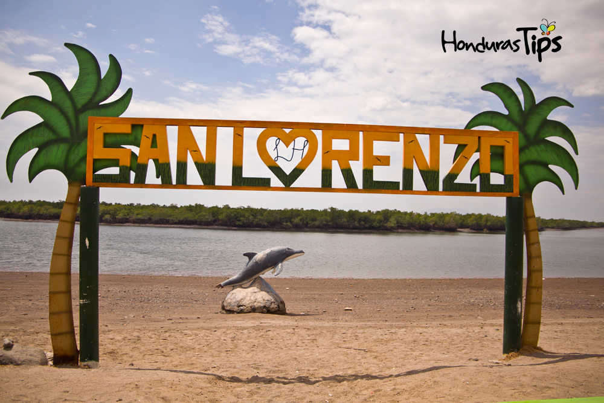

San Lorenzo

San Lorenzo, Valle se encuentra a tan 104 kilómetros de Tegucigalpa.
Es reconocida por ser la capital turística del sur, debido a que es
una ciudad y puerto al mismo tiempo. Este destino es muy querido por
los sureños y visitantes, ya que hay muchas atracciones por conocer.
Escaparse a este lugar, definitivamente es una de las mejores opciones
de Honduras.